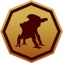
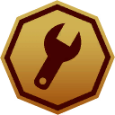

The world
The map is one continuous world split into 8 regions. You start on the islands of the Archipelago and work your way north. Himfjäll, the snowy mountain region, comes with the Alpine Unrest expansion.
The world is dotted with 359 named locations (farms, churches, bunkers, military bases and more). Safehouses are where you respawn and fast travel; you unlock them by finding them. Control points are resistance bases that machines attack, and that you can capture and fortify.
The machines
The machines are the enemies. The Swedish-built types (Ticks, Seekers, Runners, Hunters, Harvesters and Tanks) come in classes that get tougher and better armed: Prototype, Military, FNIX and Apocalypse. Soviet machines (Firebirds, Lynxes and Wolves) use the classes Scout, Soldier and Spetsnaz. Rivals are named machines that level up each time they beat you, and the Reaper and Vulture are special rival machines.
Machines are not one health bar: each one is made of components (weapons, joints, fuel tanks, sensors) and armour plates, each with its own hit points. Shooting off a weapon disarms it; hitting a fuel tank can set it on fire. The machine pages list every component of every layout.
Weapons, ammo and quality
Each weapon comes in up to five qualities you can find (Dilapidated, Worn, Good, Exceptional, Special); a higher quality does more damage and is more accurate. Experimental weapons are a sixth tier with unique ammo. Ammo types matter as much as the gun: armour-piercing rounds hit armour harder, hollow-points tear up components, and special rounds burn, shock or explode. See quality and ammo.
Attachments (scopes, silencers, compensators, extended magazines) and augments (perks you unlock by research) change how a weapon handles.
Progression
You earn experience by fighting and exploring. Each level gives a skill point to spend in the 4 skill trees (Combat, Support, Survival, Tech). Schematics let you craft ammo, equipment and apparel from materials; each schematic tree has its own points that you earn by doing related things.
| Schematic points | How you earn them |
|---|---|
 Companion Schematic Points (CSP) | Acquired by traveling with your Companion and destroying machines together. |
 Apparel Schematic Points Apparel Schematic Points | Found as loot when defeating Rivals. |
 Experimental Schematic Points Experimental Schematic Points | Acquired by completing Base Assault and Defense missions. |
 Equipment Schematic Points | Acquired by crafting equipment or found as loot when exploring the world. |
 Ammo Schematic Points Ammo Schematic Points | Acquired by crafting ammo or found as loot when exploring the world. |
 DLC Schematic Points DLC Schematic Points | Acquired by crafting DLC items. |
Difficulty and co-op
Difficulty and the number of players in the game scale how much damage you do to machines and how much they do to you. The full table, with worked examples, is on Difficulty & co-op.
| Difficulty | Players | Your damage to machines | Machine damage to you |
|---|---|---|---|
| Easy | 1 | 2× | 0.5× |
| Easy | 2 | 1.67× | 0.67× |
| Easy | 3 | 1.33× | 0.83× |
| Easy | 4 | 1× | 1× |
| Medium | 1 | 1× | 1× |
| Medium | 2 | 0.83× | 1.33× |
| Medium | 3 | 0.67× | 1.67× |
| Medium | 4 | 0.5× | 2× |
| Hard | 1 | 0.75× | 2× |
| Hard | 2 | 0.63× | 2.67× |
| Hard | 3 | 0.5× | 3.33× |
| Hard | 4 | 0.38× | 4× |